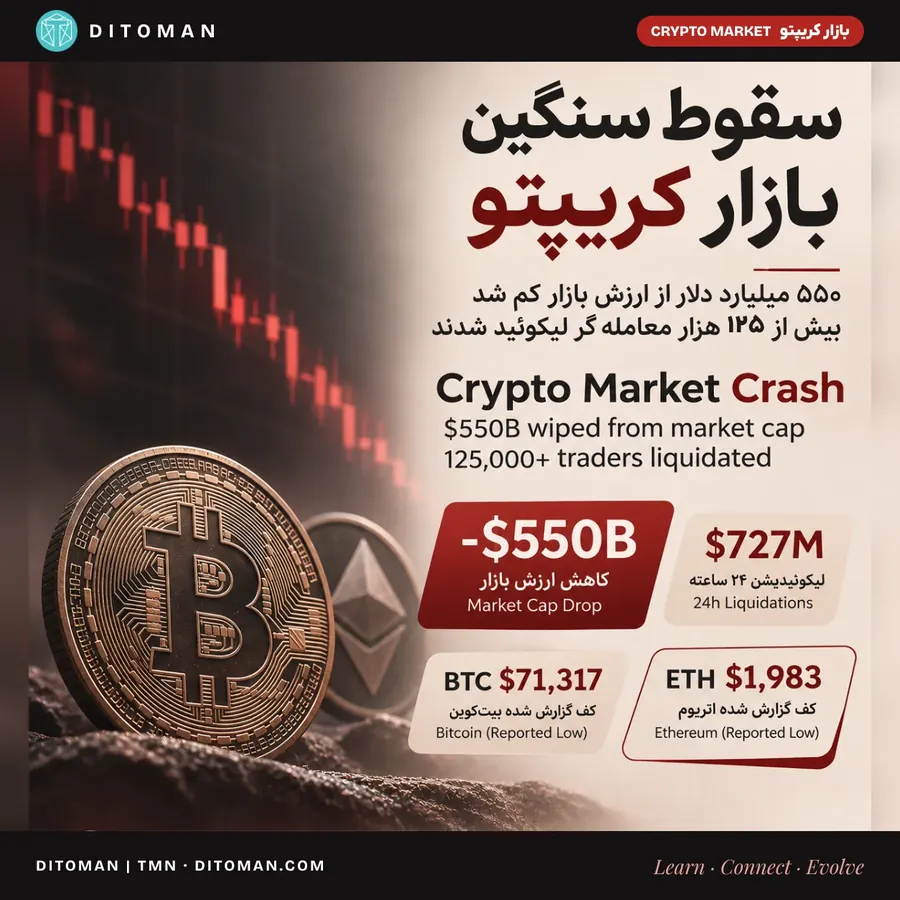
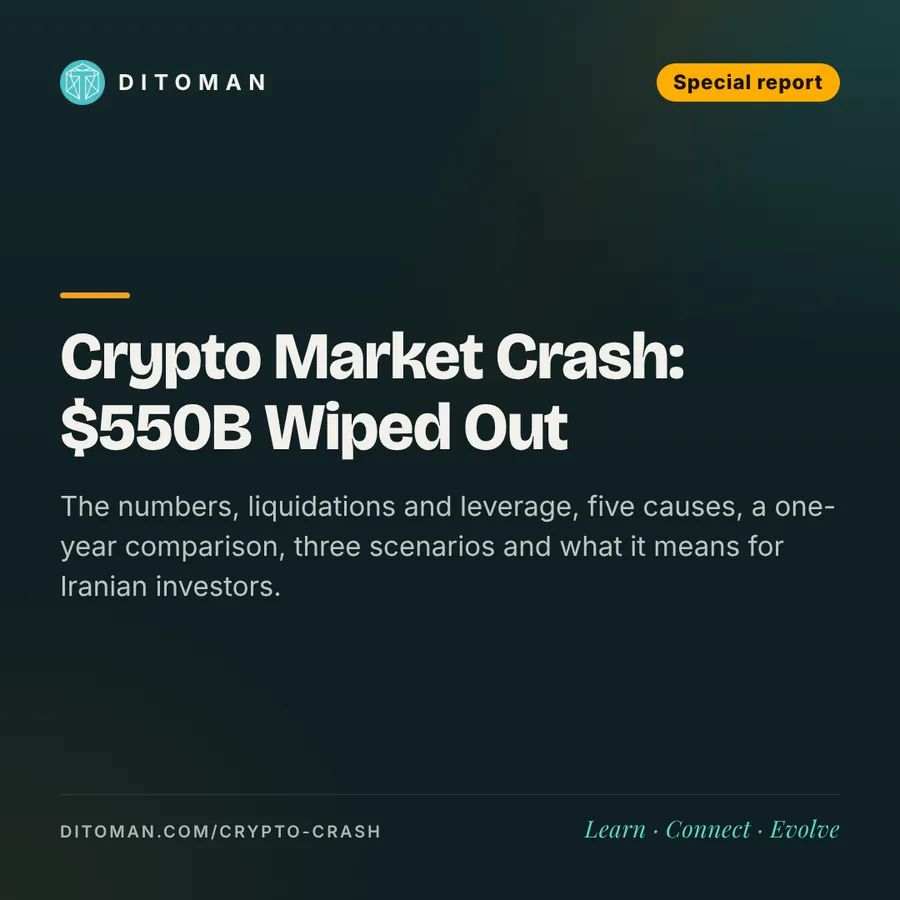

سقوط سنگین بازار کریپتو؛ ۵۵۰ میلیارد دلار از ارزش بازار کم شد
Crypto market crash: $550 billion wiped out
اعداد، لیکوئیدیشن و اهرم، پنج دلیل سقوط، مقایسه با یک سال پیش، سه سناریوی آینده و اثر بر سرمایهگذار ایرانی.
The numbers, liquidations and leverage, five causes, a one-year comparison, three scenarios and what it means for Iranian investors.
۰۰. خلاصه در یک نگاه
بیش از ۱۲۵ هزار معاملهگر در یک شبانهروز لیکوئید شدند، بیتکوین به پایینترین سطح چند ماه اخیر رسید و اتریوم مرز ۲ هزار دلار را از دست داد.
| شاخص | رقم |
|---|---|
| کاهش ارزش کل بازار (اول اکتبر تا ۱۲ نوامبر) | حدود ۵۵۰ میلیارد دلار؛ از ۲٫۹۴ به ۲٫۳۹ تریلیون (حدود ۱۹٪) |
| کف گزارششدهی بیتکوین (۱۲ نوامبر) | حدود ۷۱٬۳۱۷ دلار؛ ۱۳ نوامبر زیر ۷۰ هزار |
| کف گزارششدهی اتریوم | حدود ۱٬۹۸۳ دلار |
| لیکوئیدیشن ۲۴ ساعته (۱۲ نوامبر) | حدود ۷۲۷ میلیون دلار؛ ۱۲۵٬۷۳۱ معاملهگر |
| خروج خالص از ETFهای بیتکوین (۵ جلسه تا ۱۱ نوامبر) | حدود ۱٫۴۴ میلیارد دلار |
| کاهش عرضهی استیبلکوینها (۳۰ روز) | حدود ۱۴٫۲ میلیارد دلار |
این گزارش سه چیز را جدا میکند: دادههای منتشرشده، دلایل محتمل و تحلیل دیتومان. هیچ بخشی از آن توصیهی خرید یا فروش نیست.
۰۱. ۵۵۰ میلیارد دلار؛ این عدد دقیقاً یعنی چه؟
از ابتدای اکتبر تا ۱۲ نوامبر ۲۰۲۶، ارزش کل بازار ارزهای دیجیتال از حدود ۲٫۹۴ تریلیون دلار به ۲٫۳۹ تریلیون دلار رسید.
اما کاهش ۵۵۰ میلیارد دلاری ارزش بازار به معنای خروج همین مقدار پول نقد نیست. ارزش بازار از ضرب قیمت هر دارایی در تعداد توکنهای در گردش به دست میآید. وقتی آخرین معامله با قیمت پایینتر انجام میشود، ارزش همهی توکنها روی کاغذ کم میشود؛ حتی توکنهایی که اصلاً معامله نشدهاند.
یک مثال ساده:
اگر در یک روستا ۱۰۰ خانه باشد و فقط یک خانه ۱۰٪ ارزانتر فروخته شود، «ارزش بازار» کل خانههای روستا ۱۰٪ کم میشود؛ اما فقط یک معامله انجام شده است.
۰۲. بیتکوین و اتریوم کجا ایستادهاند؟
- بیتکوین: در گزارشهای ۱۲ نوامبر تا حدود ۷۱٬۳۱۷ دلار پایین آمد و گزارشهای ۱۳ نوامبر از سقوطش به زیر ۷۰ هزار دلار خبر دادند
- اتریوم: تا ۱٬۹۸۳ دلار؛ زیر مرز روانی ۲ هزار دلار
- فاصله از اوج تاریخی: بیتکوین در اکتبر ۲۰۲۵ رکورد حدود ۱۲۶ هزار دلار را ثبت کرد؛ یعنی حالا حدود ۴۴٪ پایینتر از اوج است
- نشانهی فنی: بیتکوین در ۹ نوامبر میانگین متحرک ۵۰ هفتهای را از دست داد؛ سطحی که بسیاری از معاملهگران آن را مرز روند بلندمدت میدانند
۰۳. لیکوئیدیشن: موتور پنهان سقوط
بر اساس دادههای CoinGlass در گزارش ۱۲ نوامبر، حدود ۱۲۵٬۷۳۱ معاملهگر در یک بازهی ۲۴ ساعته لیکوئید شدند.
| دارایی | لیکوئیدیشن ۲۴ ساعته |
|---|---|
| بیتکوین | ۲۹۳٫۸ میلیون دلار |
| اتریوم | ۱۲۰٫۲ میلیون دلار |
| سایر ارزها | حدود ۳۱۳ میلیون دلار |
| جمع | حدود ۷۲۷ میلیون دلار |
بزرگترین موقعیت لیکوئیدشده در این بازه، معاملهای حدود ۳۱ میلیون دلاری روی بیتکوین در پلتفرم Hyperliquid بود.
در گزارشهای ۱۳ نوامبر، رقم ۲۴ ساعته تا حدود ۱٫۲ میلیارد دلار بالا رفت و در ۹ نوامبر هم موجی بیش از ۱٫۱۵ میلیارد دلاری ثبت شده بود. این ارقام مربوط به بازههای زمانی متفاوتاند و نباید با هم جمع شوند.
لیکوئیدیشن یعنی چه؟
فرض کنید فردی هزار دلار سرمایه دارد و با اهرم ۲۰ برابر، معاملهای ۲۰ هزار دلاری باز میکند.
| اهرم | چند درصد حرکت مخالف، کل سرمایه را از بین میبرد؟ |
|---|---|
| ۲ برابر | حدود ۵۰٪ |
| ۵ برابر | حدود ۲۰٪ |
| ۱۰ برابر | حدود ۱۰٪ |
| ۲۰ برابر | حدود ۵٪ |
| ۵۰ برابر | حدود ۲٪ |
در عمل، صرافی به دلیل الزامات وثیقه و کارمزد، موقعیت را حتی زودتر میبندد. برای مقایسه: بیتکوین در همین دوره بیش از ۲۰٪ افت کرد؛ یعنی هر کسی با اهرم ۵ برابر یا بیشتر خرید کرده بود، در معرض حذف کامل بود.
چرخهی دومینو:
قیمت میافتد ← موقعیتهای اهرمی خودکار بسته میشوند ← بسته شدن موقعیتهای خرید یعنی فروش اجباری ← قیمت بیشتر میافتد ← موقعیتهای بعدی بسته میشوند.
۰۴. پنج دلیل سقوط
۱. نگرانی از نرخ بهرهی آمریکا
گزارش تورم اکتبر آمریکا نگرانیها دربارهی ادامهی سیاست پولی سختگیرانه را بیشتر کرد. وقتی سرمایهگذاران انتظار نرخ بهرهی بالاتر دارند، داراییهای بدون درآمد و پرریسک مثل کریپتو جذابیت کمتری پیدا میکنند؛ چون پول نقد و اوراق قرضه بازده بیخطر بیشتری میدهند.
۲. خروج سرمایه از صندوقهای بیتکوین
در پنج جلسهی معاملاتی منتهی به ۱۱ نوامبر، ETFهای نقدی بیتکوین آمریکا حدود ۱٫۴۴ میلیارد دلار خروج خالص ثبت کردند. این صندوقها از ۲۰۲۴ به یکی از بزرگترین منابع تقاضای بیتکوین تبدیل شدهاند؛ وقتی جهتشان عوض میشود، فشار فروش مستقیم به بازار میرسد.
۳. دومینوی معاملات اهرمی
حجم بالای اهرم، افت معمولی را به سقوط تند تبدیل کرد (بخش ۰۳).
۴. نگرانی دربارهی شرکتهای بزرگ فناوری
فشار فروش در سهام فناوری و بحث دربارهی ارزشگذاریهای بالا، فضای احتیاط را در همهی بازارها تقویت کرد. کریپتو در بسیاری از دورهها همراه با دیگر داراییهای پرریسک حرکت میکند. البته نمیتوان سهم دقیق هر خبر را مشخص کرد.
۵. کاهش نقدینگی
طبق دادههای CryptoQuant، عرضهی استیبلکوینها در ۳۰ روز حدود ۱۴٫۲ میلیارد دلار کم شده است. استیبلکوینها «سوخت» خرید در بازار کریپتو هستند؛ کم شدنشان نشانهی ضعیف شدن قدرت خرید است، هرچند لزوماً به معنای خروج کل این مبلغ از بازار نیست.
۰۵. یک سال پیش، همین موقع
| پاییز ۲۰۲۵ | پاییز ۲۰۲۶ | |
|---|---|---|
| اوج پیش از سقوط | رکورد تاریخی بیتکوین، حدود ۱۲۶ هزار دلار (اکتبر) | ارزش کل بازار حدود ۲٫۹۴ تریلیون دلار (اول اکتبر) |
| شوک بزرگ | ۱۰ اکتبر: بزرگترین لیکوئیدیشن تاریخ کریپتو | موجهای بیش از ۱ میلیارد دلاری در ۹ و ۱۳ نوامبر |
| افت ماه نوامبر | بیتکوین بیش از ۲۰٪؛ حدود ۱٫۲ تریلیون دلار کاهش ارزش بازار | بیتکوین زیر ۷۰ هزار دلار؛ ۵۵۰ میلیارد دلار از اول اکتبر |
| حالوهوای بازار | «پایان رونق دورهی ترامپ» | «بازار خرسی عمیقتر» |
درس این مقایسه:
این دومین پاییز پیاپی است که بازار کریپتو با اهرم بالا و فروش اجباری روبهرو میشود. یعنی ساختار بازار عوض نشده: هر بار که اهرم زیاد میشود، یک شوک کوچک کافی است تا موج بزرگی راه بیفتد.
۰۶. اثر روی بخشهای مختلف بازار
- آلتکوینها: سهم «سایر ارزها» در لیکوئیدیشن (حدود ۳۱۳ میلیون دلار) از بیتکوین هم بیشتر بود؛ در سقوطها، ارزهای کوچکتر معمولاً تندتر میریزند
- استیبلکوینها: کاهش ۱۴ میلیارد دلاری عرضه، همزمان با ورود بانکهای بزرگ دنیا به این بازار (پروژهی Faro)؛ کوتاهمدت ضعیف، بلندمدت در حال نهادی شدن
- صندوقهای ETF: همان ابزاری که در رونق پول آورد، در سقوط هم پول را سریعتر خارج میکند
- صرافیهای غیرمتمرکز: بزرگترین لیکوئیدیشن تک در Hyperliquid، نشان میدهد معاملات اهرمی دیگر فقط در صرافیهای متمرکز نیست
۰۷. دو نگاه متفاوت
نگاه نگران:
شکسته شدن میانگین ۵۰ هفتهای، خروج مداوم از ETFها و کاهش نقدینگی، نشانههای یک بازار خرسی طولانیترند. اگر نرخ بهره بالا بماند، تقاضای تازهای برای داراییهای پرریسک نخواهد آمد.
نگاه آرامتر:
پاک شدن اهرمهای بیش از حد، بازار را «سالمتر» میکند. زیرساختها، از ETF تا استیبلکوینهای بانکی، در حال رشدند و هر سقوط بزرگ گذشته، بعد از مدتی جای خود را به بهبود داده است.
دیتومان هیچکدام را قطعی نمیداند؛ دادهها هنوز برای هر دو سناریو کافی نیستند.
۰۸. سه سناریو برای آینده
سناریوی ۱: تثبیت و بهبود تدریجی
لیکوئیدیشنها آرام میشوند، خروج از ETFها متوقف میشود و عرضهی استیبلکوینها دوباره رشد میکند. بازار چند هفته در یک محدوده نوسان میکند و بعد آرام بالا میرود.
سناریوی ۲: نوسان طولانی
دادههای اقتصادی متناقض باقی میمانند؛ بازار ماهها بدون روند مشخص بالا و پایین میرود. این سناریو برای معاملهگر اهرمی خطرناکترین است.
سناریوی ۳: ادامهی ریزش
نرخ بهره بالا میماند، فروش سهام فناوری ادامه پیدا میکند و خروج از صندوقها شدیدتر میشود.
چه چیزی را دنبال کنیم؟
- دادهی روزانهی لیکوئیدیشن (CoinGlass)
- جریان روزانهی ETFها (Farside)
- عرضهی کل استیبلکوینها (DefiLlama)
- تصمیم بعدی فدرال رزرو دربارهی نرخ بهره
۰۹. برای سرمایهگذار ایرانی
ارزش تومانی دارایی دیجیتال به دو متغیر بستگی دارد: قیمت جهانی و نرخ دلار به تومان.
| حالت | اثر روی ارزش تومانی |
|---|---|
| قیمت جهانی ↓ و دلار ثابت | کاهش |
| قیمت جهانی ↓ و دلار ↑ | بخشی از افت جبران میشود |
| قیمت جهانی ↓ و دلار ↓ | کاهش دوچندان |
همین تتری که بسیاری از ایرانیها برای حفظ ارزش پول نگه میدارند، در این سقوط ارزش دلاریاش را حفظ کرده است؛ تفاوت میان «نگهداری» و «معاملهی اهرمی» همینجا روشن میشود.
سه ریسک ویژهی ما:
- اهرم: بسیاری از پلتفرمها اهرمهای بالا را با چند کلیک در دسترس میگذارند
- دسترسی: محدودیت دسترسی به صرافیهای خارجی، در روز بحران میتواند خروج را سخت کند
- امنیت: نگهداری دارایی، کلیدها و حسابها؛ در روزهای پرنوسان کلاهبرداریها هم بیشتر میشوند
۱۰. چکلیست مدیریت ریسک
- پولی را که برای زندگی ماه آینده لازم داری، وارد بازار پرنوسان نکن
- اگر از اهرم استفاده میکنی، بدان با چند درصد حرکت مخالف کل سرمایه از بین میرود
- حد ضرر را قبل از ورود تعیین کن، نه وسط سقوط
- همهی سرمایه را روی یک دارایی نگذار
- با تیتر تصمیم نگیر؛ دادهها را دنبال کن
۱۱. نگاه دیتومان
بازار کریپتو فقط به دلیل یک خبر سقوط نکرد. نگرانی از نرخ بهره، خروج سرمایه از صندوقها، کاهش نقدینگی و حجم بالای اهرم همزمان دست به دست هم دادند تا افت معمولی به موجی بزرگ تبدیل شود.
درس اصلی این است: در بازارهای پرنوسان، فقط جهت قیمت مهم نیست؛ اندازهی ریسکی که میپذیری سرنوشت سرمایهات را تعیین میکند.
سؤال اصلی امروز این نیست که بیتکوین چقدر سقوط کرده؛ سؤال این است که تقاضای واقعی کی دوباره به بازار برمیگردد.
بیشتر بخوانید
- بانکهای بزرگ وارد رقابت استیبلکوین شدند
- قیمت لحظهای تتر، بیتکوین و طلا
- چرا یونایتد خرید بلیت با هوش مصنوعی را ممنوع کرد؟
- اروپا به رفاه گرانقیمت عادت کرده؛ چه کسی هزینهاش را میپردازد؟
- صنعت تازه: ساختن هوش مصنوعی برای کسبوکارها
- تو عقب نیفتادهای؛ زمین مسابقه جلوتر دویده
منابع
- CoinGlass: liquidation data
- Farside Investors: bitcoin ETF flows
- CryptoSlate: bitcoin and ether sink to 3-month lows
- The Block: bitcoin loses 50-week moving average
- RTTNews: cryptos extend losses
- The National / Reuters: bitcoin record $126,251 (Oct 2025)
- Business Today: November 2025 crypto carnage
- DefiLlama: stablecoins
آخرین بازبینی: ۲۲ آبان ۱۴۰۵. دیتومان یک رسانهی آموزشی است و این گزارش توصیهی سرمایهگذاری نیست.